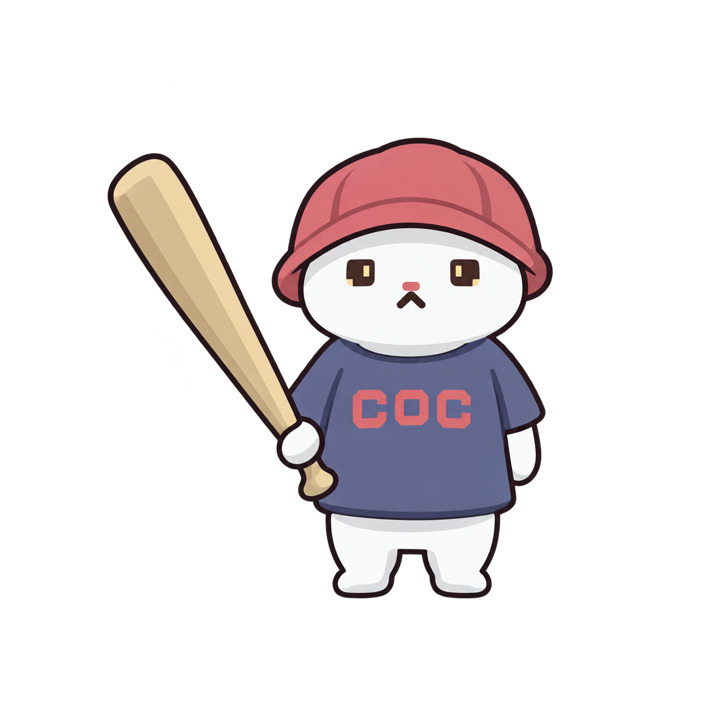
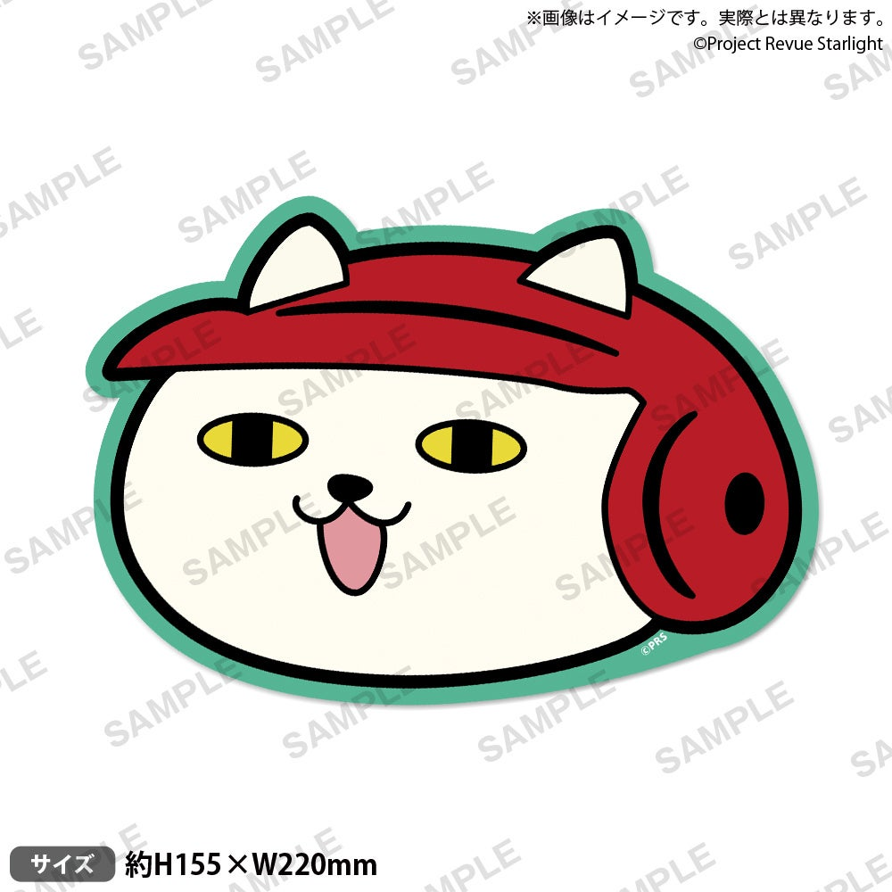
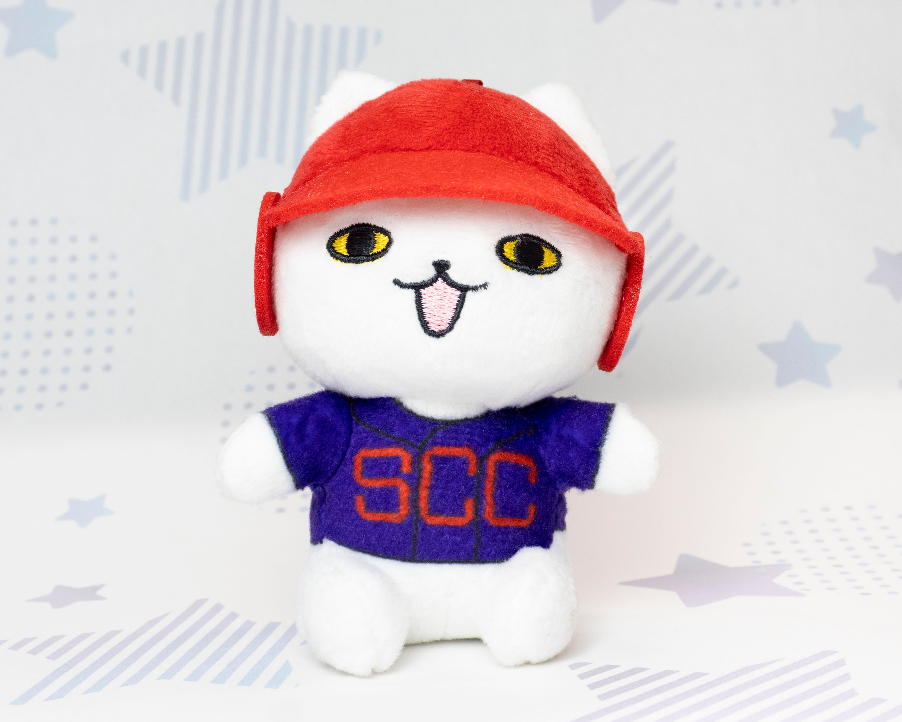
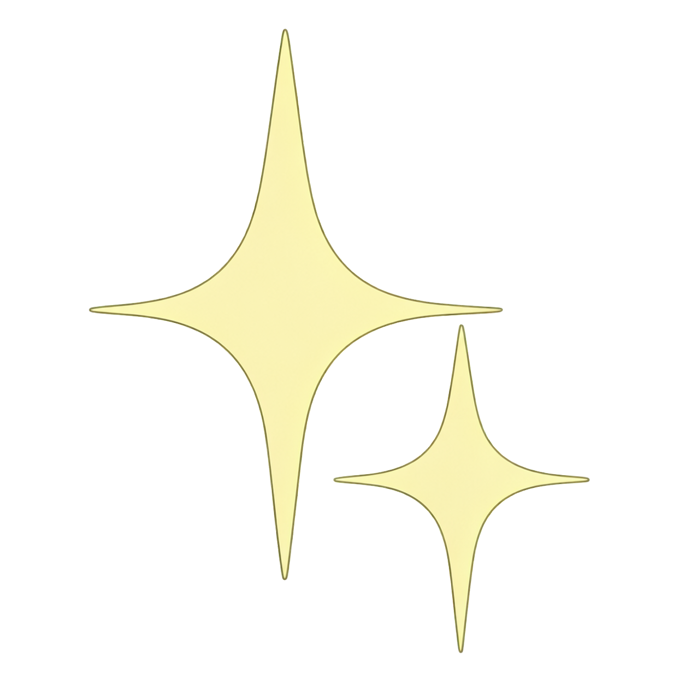
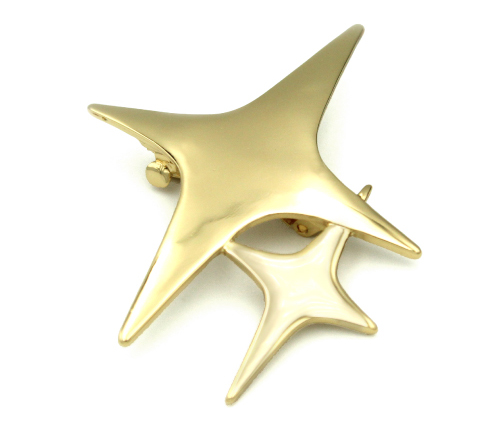
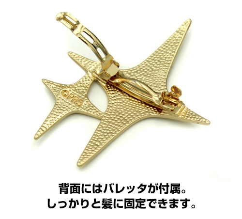
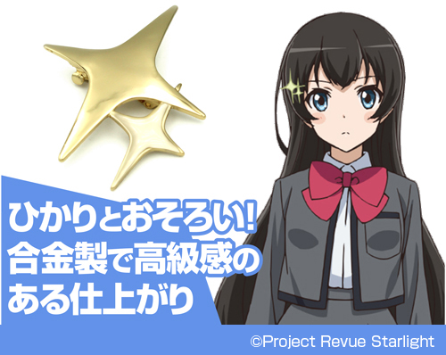
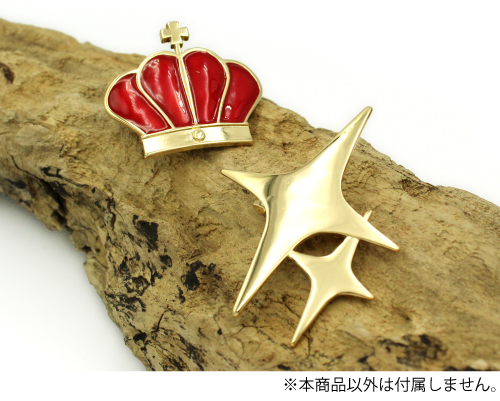

三件遗物 · 重新核对参考
棒球猫、星形发饰、星之王冠的上一版重绘均标记为待返修。本页展示真实参考与错误稿；本轮没有再生成图片。
原始照片和动画截图未修改。王冠局部仅通过显示视窗放大，完整截图可展开查看。完整核对记录
01 · 棒球猫





- 眼睛应是黄色横椭圆轮廓、黑色竖瞳；鼻子为黑色，嘴张开并露出粉色舌头。
- 红色棒球头盔带侧面护耳，猫耳露出；球衣为深蓝紫色，红字是 SCC。
- 老 Mod 可用于核对持球棒站姿，面部细节以清楚的官方图为准。
02 · 星形发饰





- 不能把卡图中截出的两个星形剪影直接当作完整发饰；需要核对大、小星的比例、重叠位置和连接关系。
- 实物照片用于确认结构，官方商品页中的角色图用于核对佩戴时的造型。
展开官方角色对照图与两人发饰合照


03 · 星之王冠

- 应保留较高的中央双卷曲与两侧镂空比例，冠架线条更细。
- 中央是纵向粉色椭圆宝石；顶部、两侧和底部的白色小装饰不能省略。
- 此物件是星之冠，不是华恋的红色王冠发夹。
来源：TV 第11话截图转载页。截图带 TBS 标志；页面本身不是官方设定集。
怀表出处说明
目前没有找到能核实的动画对应截图。当前绿色「怀表牌」只能追溯到老 Mod 的 DrawExtraRelic.png；本地化的背景说明为空。
另有 AMNIBUS 官方怀表周边和官网收录的 2019 款，但不能据此认定当前怀表牌出现在动画里。